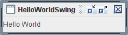

Esta sección explica cómo compilar y ejecutar una aplicación Swing desde la línea de comandos. Para información de cómo compilar y ejecutar una aplicación Swing usando el EID de NetBeans, vea Ejecutando los Ejemplos del Tutorial en el EID NetBeans. Las instrucciones de compilación funcionan para todos los programas de Swing — applets, como también para aplicaciones. Estos son los pasos que debe seguir:
Puede descargar la última versión del KDJ (JDK, en inglés) gratuitamente desde http://www.oracle.com/technetwork/java/javase/downloads/index.html.
Puede usar un programa simple que le ofrecemos, llamado HelloWorldSwing, que muestra el
IGU mostrado en la figura de debajo. El programa está en un fichero único,
HelloWorldSwing.java. Cuando salve este fichero, debe coincidir con la ortografía y
mayúsculas de su nombre exactamente.
El ejemplo HelloWorldSwing.java, como el resto de todos nuestros ejemplos del tutorial de Swing,
está creado dentro de un paquete. Si ve el código fuente, verá la siguiente línea al principio del fichero:
package start;
Esto significa que debe colocar el fichero HelloWorldSwing.java dentro del directorio
start. Compile y ejecute el ejemplo desde el directorio que está encima del directorio
start. Los ejemplos del tutorial de la lección Usando Componentes Swing están dentro de un
paquete components y los ejemplos de la lección Escribiendo Listener Events están dentro
del paquete events, etcétera. Para más información, puede que quiera ver la lección
Paquetes.

Su próximo paso es compilar el programa. Para compilar el ejemplo, desde el directorio de encima del fichero
HelloWorldSwing.java :
javac start/HelloWorldSwing.java
Si lo prefiere, puede compilar el ejemplo desde dentro del directorio start:
javac HelloWorldSwing.java
pero debe recordar dejar el directorio start para ejecutar el programa.
Si no es capaz de compilar, asegúrese que está utilizando el compilador de una versión reciente de la plataforma Java. Puede verificar la versión de su compilador o del Entorno de Ejecución Java (Java Runtime Environment o JRE, en inglés) usando estos comandos:
javac -version
java -version
Una vez haya actualizado su KDJ (JDK, en inglés), debería ser capaz de usar los programas en este recorrido sin cambios. Otro error común es instalar el EEJ (JRE, en inglés) y no el Kit de Desarrollo Java o KDJ (JDK, en inglés) necesitado para compilar estos programas. Refiérase al recorrido Comenzando para ayudarle a solventar cualquier problema de compilación que se encuentre. Otro recurso es la Guía de Resolución de Problemas para Java™ SE 6 Tecnologías de Escritorio.
Después de que compila el programa exitosamente, puede ejecutarlo. Desde el directorio de encima
start ejecute el comando:
java start.HelloWorldSwing